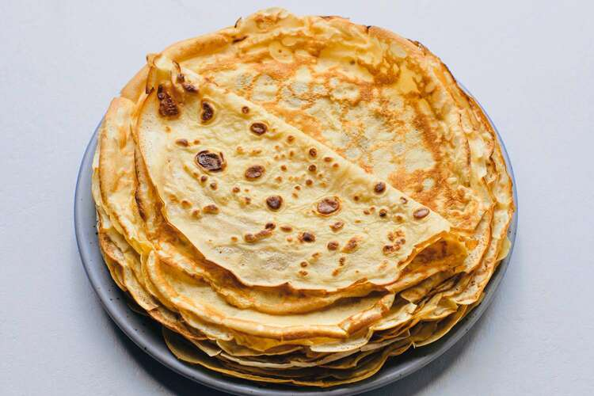

Uncle's pancakes
Learn a skill for life with Uncle's foolproof easy crêpe recipe that ensures perfect pancakes every time -
elaborate flip optional
Ingredients
- 1 ½ cups all-purpose flour
- 2 tablespoons white sugar
- ½ teaspoon salt
- 4 large egg whites
- 3 cups milk
- 3 tablespoons vegetable oil
- 2 teaspoons vanilla extract
- 1 tablespoon butter for the pan, or more as needed
Directions
- Sift together flour, sugar, and salt in a bowl.
- Beat egg whites in a glass, metal, or ceramic bowl until stiff peaks form. Set aside.
- Mix milk, egg yolks, oil, and vanilla extract in a large bowl.
Whisk in flour mixture until well combined. Fold in egg whites with a spatula.
- Heat a small piece of butter in a skillet and pour a small amount of batter into the skillet.
Turn skillet so batter covers the bottom of the skillet.
- Cook until lightly browned on one side, 2 to 3 minutes.
Flip pancake over and cook on the other side for 1 to 2 minutes more.
- Repeat with remaining batter, always melting a new small piece of butter in the skillet first.
- Serve with jam or cheese for a sweet or salty experience and enjoy with some tea. :))
Home